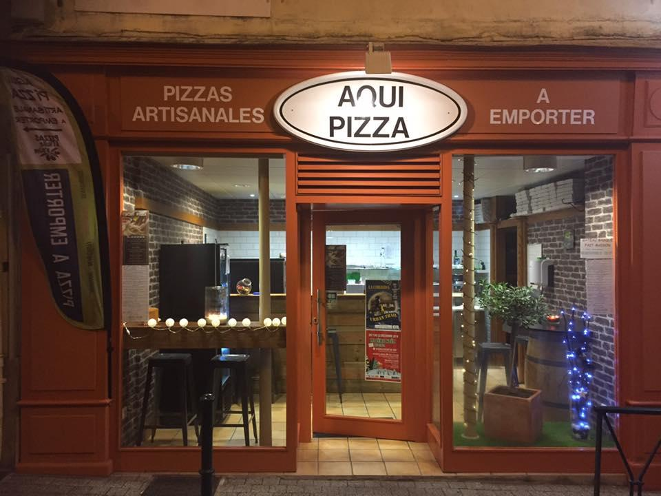

Esta historia apenas comienza.
- 2007 -
En un pequeño vecindario de una ciudad, dos amigos poco comunes llamados Alex y Max se encontraron con una pasión compartida: la pizza. Ambos amaban experimentar con diferentes sabores y texturas, y soñaban con tener su propia pizzería algún día. Aunque no tenían experiencia formal en el negocio de la comida, su entusiasmo y creatividad los impulsaron a comenzar su aventura.
- 2008 -
Alex y Max ahorraron todo el dinero que pudieron y alquilaron un pequeño local en el centro del vecindario. Con pintura fresca y algunas mesas y sillas, abrieron las puertas de su modesta pizzería llamada Pizzeria Pizzaku. Aunque al principio tuvieron pocos clientes, su auténtico sabor y atención personalizada comenzaron a atraer a la gente del vecindario.
- 2009 -
La reputación de Pizzeria Pizzaku comenzó a crecer rápidamente. Los amigos trabajaban incansablemente, mejorando sus recetas y experimentando con nuevos ingredientes. Sus pizzas únicas, como la "Pizzaku Especial" con salsa de ajo y camarones, se convirtieron en favoritas entre los clientes.
- 2011 -
El éxito local de Pizzeria Pizzaku les permitió abrir una segunda ubicación en otra parte de la ciudad. Contrataron a un pequeño equipo de empleados para ayudar con el creciente negocio. Su enfoque en la calidad y el servicio al cliente los distinguía de otras pizzerías de la zona, y la demanda seguía aumentando.
- 2013 -
Pizzeria Pizzaku había ganado una sólida base de clientes leales. Alex y Max decidieron expandirse aún más y abrir una tercera ubicación en una ciudad vecina. La noticia de sus deliciosas pizzas se extendió rápidamente, y la pizzería comenzó a recibir atención en los medios locales.
- 2015 -
El éxito de Pizzeria Pizzaku no se detenía. La cadena de pizzerías comenzó a expandirse en diferentes ciudades del país. Alex y Max trabajaban arduamente para mantener la calidad en cada una de las ubicaciones. Contrataron a expertos en gestión y capacitación para mantener la consistencia en sus recetas y en el servicio al cliente.
- 2018 -
Pizzeria Pizzaku se había convertido en una de las cadenas de pizzerías más populares del país. Sus sabores innovadores y la calidad de sus ingredientes atrajeron la atención de inversionistas interesados en expandir la marca a nivel nacional. Alex y Max, con ciertas reservas pero emocionados por la oportunidad, aceptaron la oferta.
- 2020 -
Con el respaldo de los inversionistas, Pizzeria Pizzaku comenzó una expansión masiva en todo el país. Nuevas ubicaciones abrieron sus puertas en ciudades importantes y centros comerciales. La cadena también incursionó en el comercio en línea, permitiendo a los clientes realizar pedidos a través de una plataforma digital.
- 2022 -
La cadena de Pizzeria Pizzaku se había convertido en la pizzería más grande del país. Sus locales estaban en todas partes, desde pequeñas ciudades hasta grandes metrópolis. Alex y Max se enorgullecían de mantener la calidad y el espíritu original de su pizzería a pesar del crecimiento masivo.
- 2023 -
En la actualidad, Pizzeria Pizzaku es un nombre conocido en todo el país. La cadena cuenta con cientos de ubicaciones y una presencia sólida en las redes sociales. Alex y Max siguen involucrados en la empresa, pero también han formado un equipo de gestión competente para ayudar en la expansión continua. Aunque han alcanzado el éxito masivo, nunca han perdido de vista su amor por la pizza y su compromiso con la calidad. Pizzeria Pizzaku sigue siendo el lugar donde amigos y familias se reúnen para disfrutar de las pizzas más deliciosas del país.